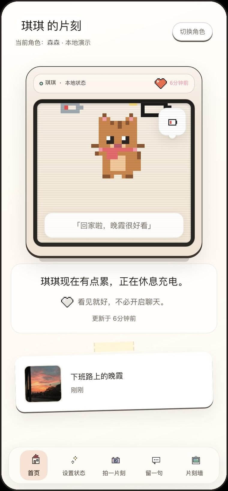
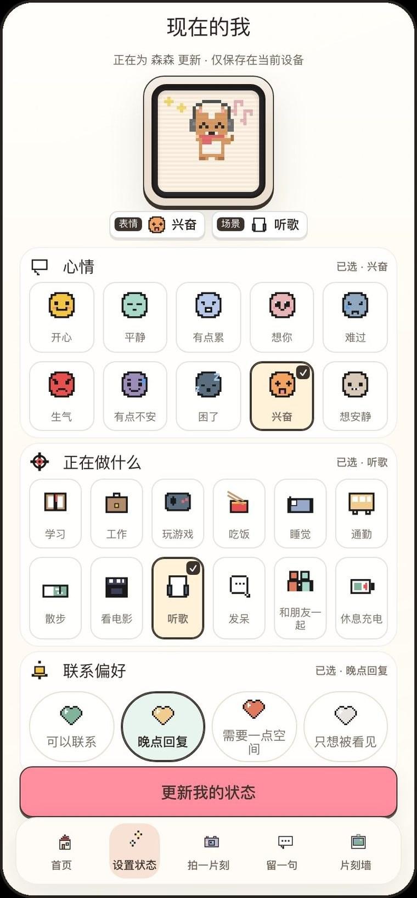
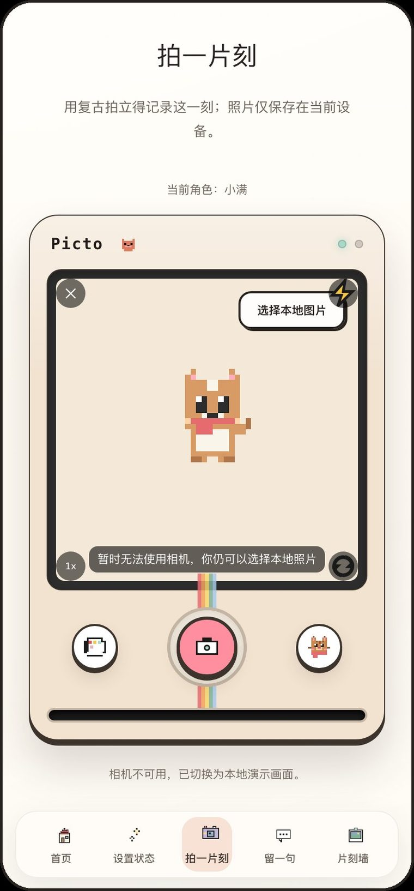
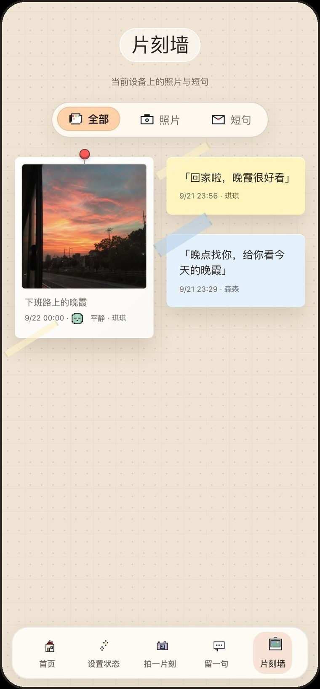
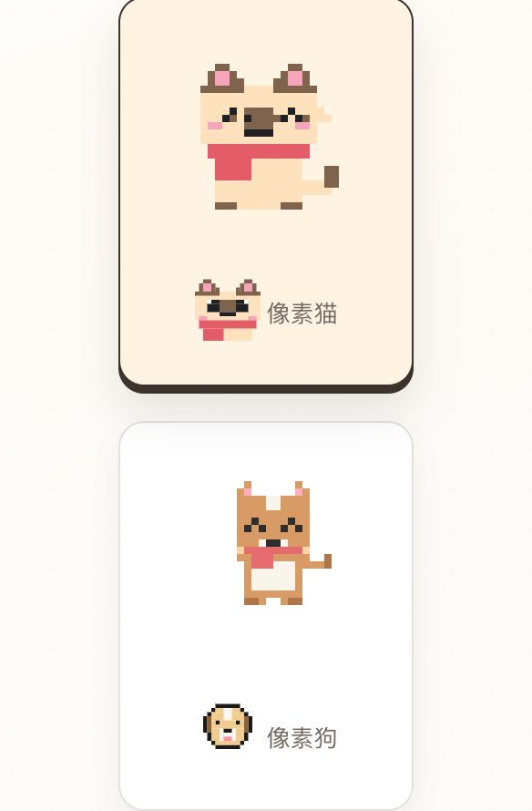
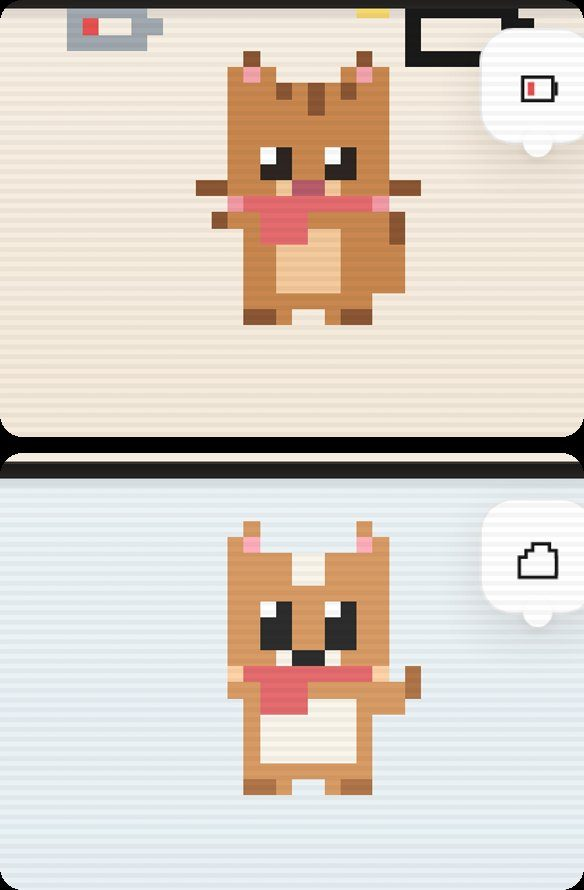

作品Picto片刻 · 低打扰情侣陪伴 App
看见彼此，
不必一直聊天。
给情侣用的陪伴 App：先让对方看见“我现在怎样”，再决定要不要说话。

- 项目性质
- 课程项目 · 独立完成
- 我的角色
- 问题定义、状态机制、交互与像素角色视觉、原型开发
- 时间
- 2026.07 – 09 · 约 2 个月
- 工具
- AI 编程工具 · 手机端 Web 原型 · 数据仅存本地
一分钟速览
- 用 1 张状态卡代替一条消息：心情 × 正在做 × 联系偏好。
- 不显示在线、已读，也不让 AI 推断情绪；4 档联系偏好让沉默不必解释。
- 6 步双角色闭环的可运行原型，21 项逻辑测试全部通过。
体验原型 （新标签页打开）本地原型 · 数据只存在你的浏览器 · 可切换双角色
01问题
聊天把“被看见”，
绑成了“要回复”。
已发表研究中，52% 的人在伴侣没按预期回复时会焦虑（Huang & Yao, 2024，非本项目调研）。异地、忙碌的情侣，需要介于沉默与聊天之间的方式。
- 沉默对方未必感知到
- Picto让当下先被看见
- 即时聊天可能形成回复压力
02关键判断
只显示本人主动表达的，
不推断，也不催回复。
状态句由本人的选择按规则拼成，不让 AI 替人表达；也不采集定位、步数或在线时间，在场不该变成监视。
现在的我
正在为 琪琪 更新 · 仅保存在当前设备
琪琪 的片刻当前角色：森森 · 本地演示
切换角色琪琪 · 本地状态刚刚
表情 有点累场景 休息充电
「回家啦，晚霞很好看」
琪琪现在有点累，正在休息充电。
看见就好，不必开启聊天。
更新于 刚刚
下班路上的晚霞刚刚
03设计
四个页面，
一条“表达 → 看见 → 留存”的闭环。
表达当下，对方看见，留一句轻回应；留言到期自动退出首页，照片和短句进入片刻墙。






—取舍
我删掉了什么
在线 · 电量暗示了不该有的监视，改为“刚刚更新”已读 · 送达回执会让接收方觉得必须回复AI 推断情绪不可预测，还会替人表达
04结果
原型完整可跑，
真实效果交给下一步研究。
以下是工程验收，说明原型稳定可用，不等于用户验证。下一步计划招募 3–5 对情侣，做一周日记研究。
- 6 步双角色闭环
- 21 项逻辑测试通过
- 23 项主流程断言
- 3 种手机宽度适配
让亲密关系里的“此刻”，先被看见。
体验原型 （新标签页打开）本地原型 · 数据只存在你的浏览器 · 可切换双角色